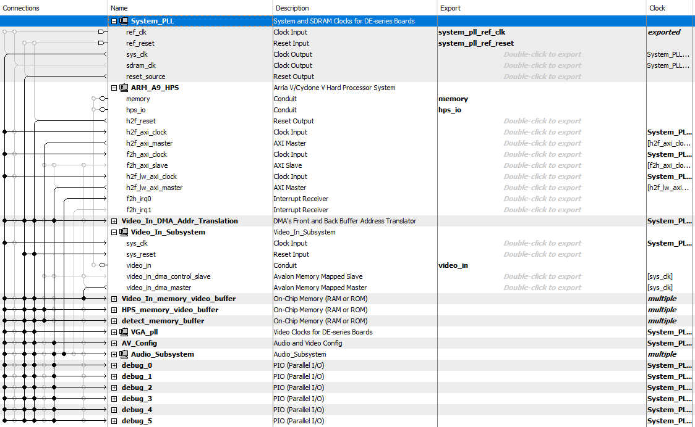
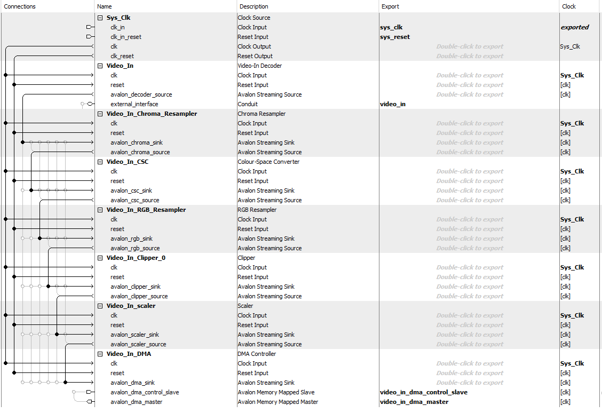

Conclusion

test
test
The Qsys component of the project is integral to the system’s functionality. Qsys essentially binds the system PLL with the logic to provide timing via the 25.175 Mhz clock, interconnects the ARM (HPS) to the FPGA via the heavyweight and lightweight axi busses, integrates the camera feed (video_in), audio subsystem, and memory buffers.
The top level Qsys module – De1SoC interconnects the system PLL, ARM, DMA address translator, video in subsystem (camera feed), memory buffers, audio subsystem, and debug PIO ports. When the program is activated from the HPS, the HPS sends a signal to the video in subsystem to turn on video capture via the light weight bus. There are three on-chip memory modules instantiated: video in memory buffer, detect memory buffer, and HPS memory buffer. The video in memory buffer stores the camera feed, the HPS memory buffer stores the graphics data, and the detect memory buffer holds the data that resembles which pixels have been flagged when blue (or red/green) is sensed.

The video in subsystem takes in the camera feed from the NTSC camera in YCrCb 4:4:4 format. Inside the video in subsystem, the YCrCb 4:4:4 feed gets goes through the Chroma Resampler and gets converted to 4:2:2 which drops half of the Cr and Cb values, alternating every pixel which value is dropped. Then, the data enters the video in CSC module (color space converter), where the YCrCb 4:2:2 feed gets converted to 16 bit RGB. The RGB resampler then converts the 16 bit RGB data into 8 bit RGB data. The clipper and the scaler modules modify the resolution of the video stream from 640 x 480 to 320 x 240. That is accomplished by increased or decreasing the stream’s height/width by a factor of. Then, the stream is placed into the DMA where it gets transmitted to the video in memory buffer (on-chip memory).

Enabling the VGA scheme to function correctly was one of the most challenging aspects of this project. We started off using Bruce’s example “Video input from NTSC to on-chip-memory, then to SDRAM VGA using HPS, in 8-bit color”. To enable overlapping between the video feed and the HPS graphics, we tried to use the alpha blender module Qsys that revolves around combining two video streams into one. The video in would be considered background while the HPS graphics feed would be considered foreground. The alpha blender module multiples the foreground by a factor of a, making it transparent over the background. However, this method did not work correctly and would not result in overlay. Advised by Hunter, the team decided to manually overlay the HPS and video feed in Quartus, which functioned fine with our custom made VGA driver from Lab 3. One of the other issues we faced in Qsys was the wrong ordering of the video in modules. For instance, we had the scaler module accidently placed above the Color Space Converter which outputted an unusual feed on the VGA screen.
test
Several fascinating results were obtained as an outcome of our successful project. To gain these results, thorough testing and analysis had to be completed in order to pinpoint bugs and resolve issues. Testing the video system (video in and VGA output) was mostly accomplished by trial and error. W developed and tuned several video modules in Qsys such as the chroma resampler, alpha blender, color space converter, RGB resampler, clipper, and scaler until the desired outcomes were reached. For example, to convert incoming YCrCb stream to RGB, we tested different RGB formats (8-bit, 16 bit, 30 bit) and the one that outputted the highest quality stream without taking up too much memory.
One of the most important tests that we ran was checking the amount of blue pixels in a certain spot on the screen to determine if the color detection algorithm on the FPGA actually functions or not. To do this, we drew a small circle on the screen from the HPS as shown in the image below and pointed a blue object such that it would show up inside the circle on the screen. Then, using a debug PIO port from Quartus, we printed the output of the RGB values inside that circle as shown in the image below. As seen, the blue values are clearly larger than the red and the green, implying that the program is able to detect the blue pixels.


test

test

test
test
This group approves this report for inclusion on the course website.
This group approves the video for inclusion on the course YouTube channel.
Project source code can be found at our github at the following link: Github - Team 18.
test
The team would like to thank Dr. Hunter Adams and Prof. Bruce Land for their assistance throughout the course.